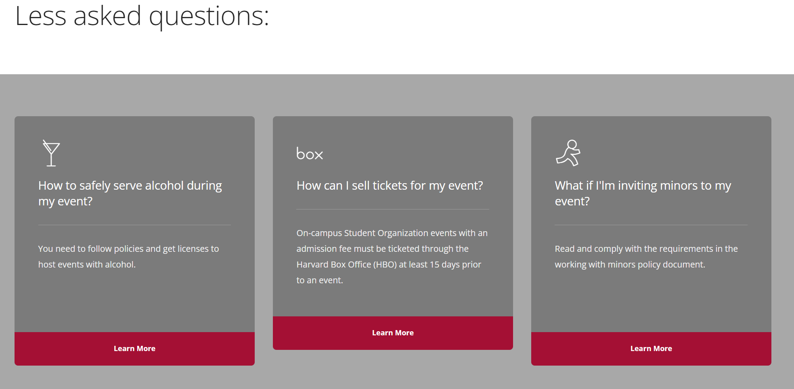

← Back to Portfolio
Web Design · Instructional Design
Harvard College Student Organization Resources Website
A resource hub designed to help Harvard student organizations navigate university systems, funding, and community tools.
Context & Problem
Student leaders reported that existing resources were difficult to navigate, outdated, and hard to apply in practice. This created barriers to compliance, financial management, and organizational success.
Project Goal: Create a student-centered resource platform that is clear, accessible, and actionable.
Process
1
Listening & Needs Assessment
- Gathered feedback from student organization leaders
- Identified key pain points and high-need topics
- Prioritized content based on student impact

2
Content Strategy & Development
- Audited and updated existing resources for accuracy and relevance
- Reorganized content for faster scanning and clearer navigation
- Created new materials on financial management and new organization applications
- Recorded step-by-step training videos


3
Platform & UX Redesign
- Redesigned layout for intuitive information retrieval
- Simplified language to improve usability
- Highlighted key policies aligned with student engagement priorities
Before


After

Outcomes & Impact
Improved accessibility and clarity of essential resources
Reduced information search time for student leaders
Increased alignment between policies and student understanding
Created a scalable platform for ongoing updates